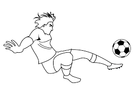
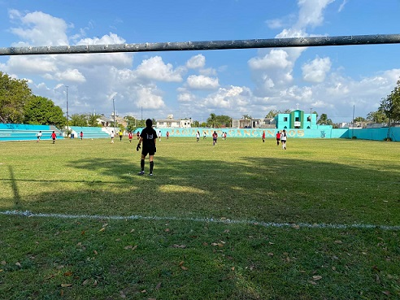

Futbol
En este paraescolar, los alumnos hacen ejercicios de calentamiento antes de iniciar con las actividades, terminando los ejercicios se dividen en equipos y juegan un breve partido o también juegan “saca reta”, que consisten en que el partido dura aproximadamente 5 minutos y dos equipos se enfrentan y el que pierda sale y entra otro equipo, en caso de que ninguno de los dos equipos meta gol, se saldrán del campo ambos equipos y entraran otros dos.
Para el selectivo en la cual se seleccionan de la siguiente manera: el profesor hace la invitación general a los que quieran entrar, entonces llegan se hace un mini partido donde él los ve jugar y selecciona en base a cómo juegan, físico y mentalmente.
Horarios:
Turno vespertino
| Horarios |
Jueves |
Sábado |
| 7:00-8:00 |
|
1ro vespertino |
| 8:00-9:00 |
|
1ro vespertino |
SELECTIVO |
| 9:00-10:00 |
5to vespertino |
SELECTIVO |
| 10:00-11:00 |
3ro vespertino |
SELECTIVO |
| 11:00-12:00 |
3ro vespertino |
SELECTIVO |
| 12:00-13:00 |
|
PRE-SELECTIVO |
Turno matutino
| Horarios |
Lunes |
Jueves |
| 14:00-15:00 |
5to matutino fem. |
|
| 15:00-16:00 |
3ro matutino |
|
| 16:00-17:00 |
3ro matutino |
5to matutino var. |
| 17:00-18:00 |
|
1ro matutino |
| 18:00-19:00 |
|
1ro matutino |
